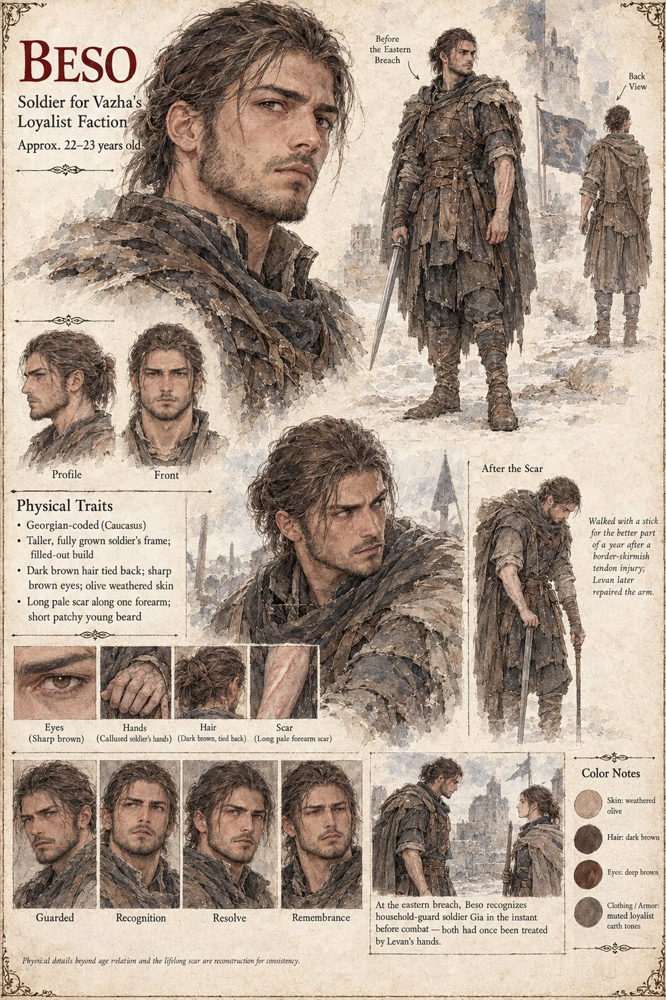

Beso
Soldier for Vazha's loyalist faction · about 22–23 on the sheet
A loyalist who walked with a stick for the better part of a year after a border skirmish, until Levan's hands rebuilt the tendon a border healer had written off. At the eastern breach on the night the outer wall falls he comes at the line from the other direction and recognizes Gia, three years his junior, in the half-second before contact. He takes a shallow cut along the forearm that scars white for the rest of his life, in a shape he never shows anyone without also explaining, unprompted, exactly whose hand had put the first version of that arm back together. The sheet draws him tall and fully grown, with dark brown hair tied back, sharp brown eyes, a short patchy young beard and a long pale scar on one forearm; it notes that everything beyond his age relation and the lifelong scar is reconstruction.